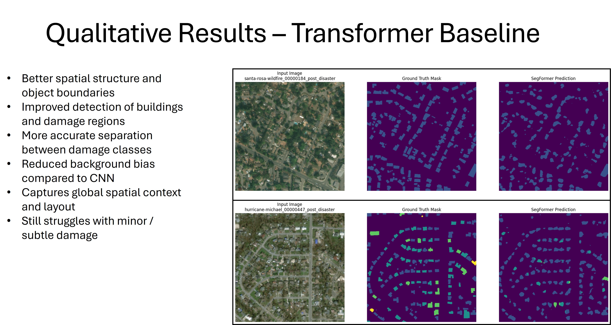
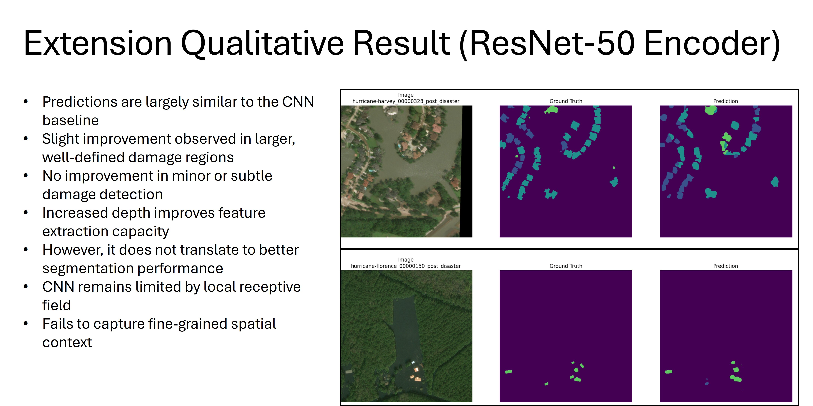
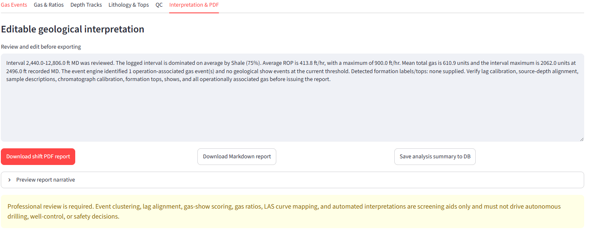

Geoscientist and Graduate Research Assistant at the University of Houston working at the intersection of operations geology, GNSS geodesy, coastal hazards, remote sensing, data engineering, high-performance computing, GPU-accelerated deep learning, and cloud computing.
Bridging field geology, geophysics, engineering, and computational geoscience.
I am a geologist and geophysicist with professional experience in wellsite geology, drilling support, formation evaluation, geosteering, geochemical QA/QC, and subsurface interpretation. I hold an M.Sc. in Geophysics from the University of Houston and am currently pursuing graduate study in Geo-Sensing and Systems Engineering.
My current research focuses on GNSS-based coastal and atmospheric monitoring, compound flooding, satellite remote sensing, and data-driven hazard prediction. I build reproducible Python and Linux workflows for large multi-source geoscience datasets using HPC and cloud-computing environments, and I develop deep-learning computer-vision workflows using CNNs and transformers on CUDA-enabled NVIDIA GPU and CPU environments.
Resume
Professional Experience, Research & Technical Expertise
View or download my current resume highlighting my experience across operations geology, geophysics, geosensing, data science, high-performance computing, cloud computing, and applied research.
Analyzed real-time XRF and XRD petrophysical and geochemical data for formation evaluation.
Performed QA/QC on geochemical datasets and integrated seismic, well-log, and geological information for subsurface interpretation.
Created technical reports and data products using SQL, Power BI, and geoscience interpretation software.
Wellsite Geologist / Field Unit Manager
Diversified Well Logging LLC · South Texas Division
Feb 2023 – Nov 2024
Supported drilling operations across the Eagle Ford, Permian, and Haynesville-Bossier basins.
Collaborated with drilling engineers and operations geologists using real-time geological and drilling data for geosteering and wellbore placement.
Managed mudlogging operations, geological reporting, formation evaluation, safety, and multidisciplinary field workflows.
Research & Presentations
Applied research in coastal hazards, GNSS, and subsurface geophysics.
ICCE 2026
GNSS-Based Hurricane Ian Monitoring
Integrated GNSS interferometric reflectometry, GNSS-derived atmospheric products, NOAA tide gauges, and NASA GPM/IMERG precipitation to investigate storm-driven sea-level and atmospheric variability during Hurricane Ian.
Presented at the International Conference on Coastal Engineering (ICCE 2026).
M.Sc. Geophysics
Well-to-Seismic Misties
Investigated mechanisms responsible for misties between synthetic seismograms and seismic data in the Delaware and Cooper basins, improving well-to-seismic ties through velocity-model corrections and AVO analysis.
Contributed to the conversion of a field geodesy module on the neotectonics of the northern Rocky Mountains into an online exercise using geodesy, GIS, remote sensing, and tectonic-geomorphology concepts.
Building tools that connect geoscience data with operational decisions.
ICCE 2026 · GNSS · Hurricane Monitoring
GNSS for Hurricane Monitoring: Tracking Storm Surge and Varying Atmosphere
Presented at the International Conference on Coastal Engineering (ICCE 2026), this research integrates GNSS Interferometric Reflectometry (GNSS-IR), GNSS-derived tropospheric products, NOAA tide gauges, and NASA GPM/IMERG precipitation observations to investigate storm-driven sea-level anomalies and atmospheric moisture variability during Hurricane Ian.
The study demonstrates how terrestrial GNSS observations can complement traditional coastal and meteorological monitoring systems for hurricane and coastal-hazard assessment.
Developing an attention-based spatiotemporal graph neural network for 1–12 hour compound-flood forecasting across the Galveston, Matagorda, and Corpus Christi bay systems.
The workflow integrates tide gauges, river and bayou gauges, GNSS stations, GPM IMERG precipitation, SMAP soil moisture, meteorological forcing, terrain information, and tropical-cyclone data to support multi-horizon flood prediction and GIS-based inundation mapping.
Python · PyTorch/Graph ML · GIS · NOAA · NASA Earthdata · HPC
Deep Learning · CUDA · Remote Sensing
Building Damage Mapping from Remote Sensing Imagery
Developed a five-class semantic-segmentation workflow for post-disaster satellite imagery using the xView2/xBD dataset, classifying background, no damage, minor damage, major damage, and destroyed buildings. Building polygons were converted into dense pixel-wise masks, with disaster-event-based data splits used to test generalization to unseen events.
Built and compared U-Net with ResNet-34 and ResNet-50 encoders against the transformer-based SegFormer-B0 architecture. Trained deep-learning workloads using CUDA-enabled NVIDIA GPU and CPU environments in Google Colab, including H200 and other GPU runtimes, and evaluated models with mIoU, Dice, macro F1, per-class metrics, confusion matrices, and qualitative segmentation analysis.
SegFormer produced the strongest overall segmentation results, improving mIoU and mean Dice relative to the CNN baseline while generating more spatially coherent damage predictions.

SegFormer: input imagery, ground truth, and transformer predictions on unseen disaster events.

ResNet-50 extension: strong large-region detection but persistent limitations for subtle damage.
Lag-aware gas-event detection and operational context.

Editable geological interpretation and report generation.
Developing an intelligent mudlogging and operations-geology platform that transforms drilling, gas, lithology, and well-log data into interactive visualizations and interpretable geological information.
The current prototype supports native LAS and CSV ingestion, configurable depth-based mudlog tracks, chromatograph gas analysis, lag-aware gas-event clustering, field-style lithology symbology, drilling-parameter visualization, editable geological interpretation, and automated shift-report generation.
Planned AI extensions will use digital cuttings imagery with CNN and transformer-based computer vision to identify lithology and estimate lithologic proportions, while integrating cuttings fluorescence, gas shows, and operational context to distinguish connection gas from formation-related responses and flag depth-based wellsite hydrocarbon show indicators for mudloggers, operations geologists, company representatives, and reservoir teams.
Processing low-elevation GNSS signal-to-noise observations using spectral analysis to retrieve reflector height and coastal water-level variability, with tide-gauge validation and ongoing work toward multi-frequency and phase-center corrections.
Python · gnssrefl · GNSS · Time Series · NOAA
Cloud · Data Engineering
Earth-Observation Data Pipelines
Building acquisition and quality-control pipelines for large NOAA and NASA datasets, including 6-minute tide gauges, GPM IMERG precipitation, SMAP soil moisture, GNSS archives, and remote-sensing products for multi-year coastal analyses.
Linux · Python · Bash · AWS/Azure · HPC · Git
Technical Skills
A multidisciplinary geoscience and computing toolkit.